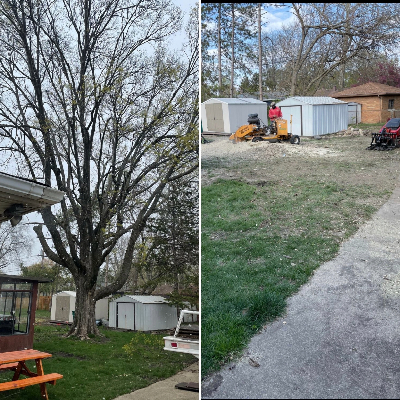

Tree Service Near Aurora IL, Naperville IL, Montgomery IL, Oswego IL, Sugar Grove IL, Wheaton IL, Warrenville IL, West Chicago IL, Hinsdale IL
Tree Service
EE Tree Service Inc is a local tree service company that has been providing top-notch tree care to the residents of our local communities for over a decade. We are a team of experienced tree care professionals that are dedicated to keeping your trees healthy and beautiful. Our services include tree pruning, tree removal, stump grinding, and emergency tree care. Whether you need a small branch trimmed or a large tree removed, we have the expertise and equipment to get the job done safely and efficiently. One of the things that sets EE Tree Service apart from other tree service companies is our commitment to environmental sustainability. We use eco-friendly practices and techniques to minimize the impact on the surrounding ecosystem. We also recycle all of the wood chips and logs from our work, which helps to reduce waste and promote a healthier environment. Another aspect that makes EE Tree Service stand out is our excellent customer service. We understand that tree care can be a complex and daunting task, and they strive to make the process as stress-free as possible for clients. From the initial consultation to the final cleanup, we communicate clearly and professionally every step of the way. EE Tree Services is fully licensed and insured, which means that clients can have peace of mind knowing that they are working with a reputable and reliable company. We offer competitive pricing and free estimates, so if you need any tree care services, be sure to give us a call.
Tree Removal: How a Tree is Removed
Tree removal is often necessary when a tree is diseased, damaged, or posing a danger to people or property. Tree removal can be a dangerous task, however, EE Tree Service is here for you! The first step in tree removal is to assess the tree's condition and determine the best approach to safely remove it. EE Tree Service will evaluate the tree's structure, health, and location to determine the safest and most efficient method of removal. We will also assess the potential risks and hazards associated with the tree's location and any nearby structures. Once we finish evaluating, the tree removal process can begin. Once we arrive we will clear the area around the tree and set up any necessary equipment. The tree will then be cut down in sections, starting at the top and working downwards. The branches will be removed, and the trunk will be cut as low as possible. Tree removal can be a dangerous task, and it is important to hire a professional tree service company like EE Tree Service with the proper equipment and experience. EE Tree Service will be there in every step of the way to ensure a safe and proper tree removal. We have the necessary insurance and licensing to protect residents like you!
Tree Trimming: How a Tree is Trimmed

Tree trimming is done to improve a tree's health, appearance, and safety. Trimming can also promote better growth and fruit production, and prevent damage from falling branches. The first step in tree trimming is to assess the tree's structure, health, and location. EE Tree Service will evaluate the tree to determine which branches need to be removed and how much should be trimmed. We will also consider the tree's natural growth patterns, potential hazards, and any nearby structures. During the trimming process, we will use specialized equipment to make precise cuts on the tree's branches. EE Tree Service may remove dead, diseased, or damaged branches, as well as those that are crossing or rubbing against each other, and trim back branches that are growing too close to power lines, buildings, or other structures. Tree trimming can also include shaping the tree to improve its appearance and promote healthy growth. This may involve removing excessive foliage, shaping the canopy, or thinning out dense areas.
Stump Grinding: How a Stump is Removed

Stump grinding is an important step in the tree removal process and it ensures that there are no hazards in your home. The first step in the stump removal procress is for EE Tree Service to call JULIE and ensure no underground lines are damaged. If the area around the stump is clear of any lines then the stump removal can begin! EE Tree Service will clear the area to not damage any plants, ornaments, or objects on the property. We use a stump grinding machine to safely remove the stump and clean any dirt and woodchips into a pile where the stump once was.